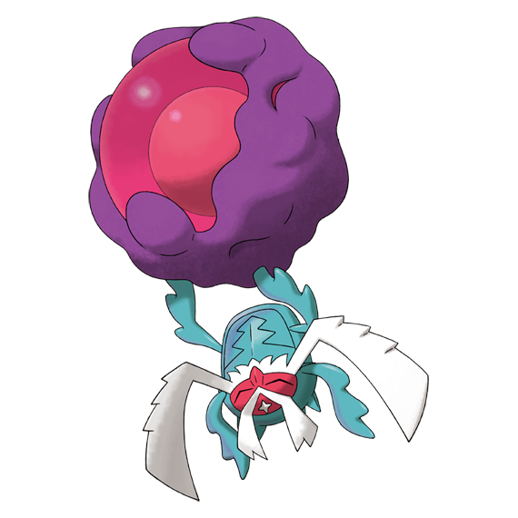
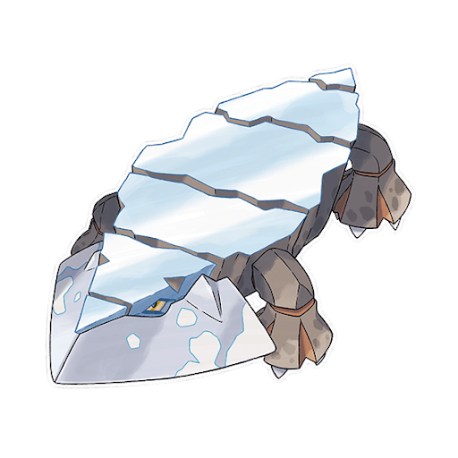
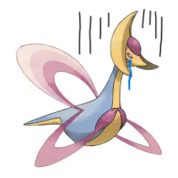

純正トリックルームについて
純正トリルの種類,立ち回り方,ポケモンを紹介
ベラカスについて
ベラカスってどんなポケモン？ベラカスを使うには？

ベラアルセ純正トリル構築
コンセプト,構築経緯,ポケモン紹介,立ち回り方を紹介
ヒスイクレベースについて
ヒスイクレベースの魅力を紹介

なんでクレセリアは「癒しの願い」を覚えないの？
i「癒しの願い」と「三日月の舞」の違い、クレセリアが癒しの願いを覚えない理由を解説

純正トリルの種類,立ち回り方,ポケモンを紹介
ベラカスってどんなポケモン？ベラカスを使うには？

コンセプト,構築経緯,ポケモン紹介,立ち回り方を紹介
ヒスイクレベースの魅力を紹介

i「癒しの願い」と「三日月の舞」の違い、クレセリアが癒しの願いを覚えない理由を解説
